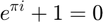
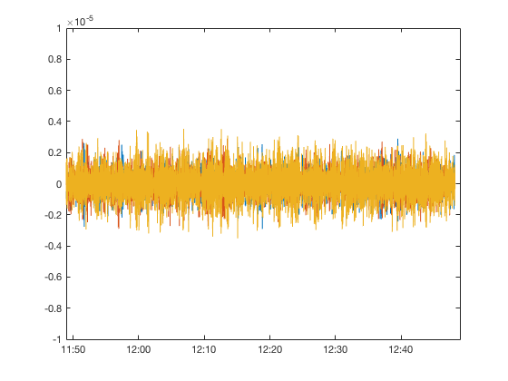

clear all clf javaaddpath('/Users/goodasa/Documents/MATLAB/iris/IRIS-WS-2.0.18.jar') time_now=now-60*60*9/86400; %UTC 기준으로 9시간 차이남 want_to_see_sec = 3600 %지금부터 몇초전임을 의미, 3600초 = 1시간 time_1=datestr(time_now-want_to_see_sec/86400); time_2=datestr(time_now); %포항지진 2017년 11월 15일 14시 29분 31초 %맨아래의 axis 부분 주석표시 필요 포항확인 끝나면 주석해제 %time_1 = '2017-11-15 14:00:00'; %time_2 = '2017-11-15 16:00:00'; %time_1 = '2013-11-26 23:00:00';
want_to_see_sec =
3600

%time_2 = '2017-11-27 00:00:00'; %trace_busan=irisFetch.Traces('KS','BUS2','--','BHE,BHN,BHZ',time_1,time_2); %trace_busan=irisFetch.Traces('IU','ANMO','*','*Z',time_1,time_2); %trace_busan=irisFetch.Traces('KG','TJN*','*','*Z',time_1,time_2); %trace_busan=irisFetch.Traces('KG','TJN*','--','BHE,BHN,BHZ',time_1,time_2); trace_busan=irisFetch.Traces('JP','JGF','*','BHE,BHN,BHZ',time_1,time_2); for n=1:numel(trace_busan) tr=trace_busan(n); data=double(tr.data) ./tr.sensitivity; sampletimes=linspace(tr.startTime,tr.endTime, tr.sampleCount); plot(sampletimes,data); hold on end datetick; axis([time_now-want_to_see_sec/86400 time_now -10e-6 10e-6])